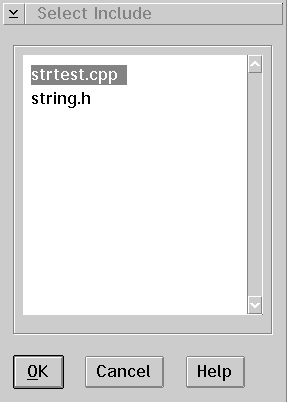

Select include file
Displays the Select Include window that allows you to view the files that
are included in your program.
To use the Select Include window:
- Select the include file. The include file name
is highlighted.
- Select the OK push button. The selected include
file view displays.
[Back: Scroll to line number...]
[Next: Change text file]